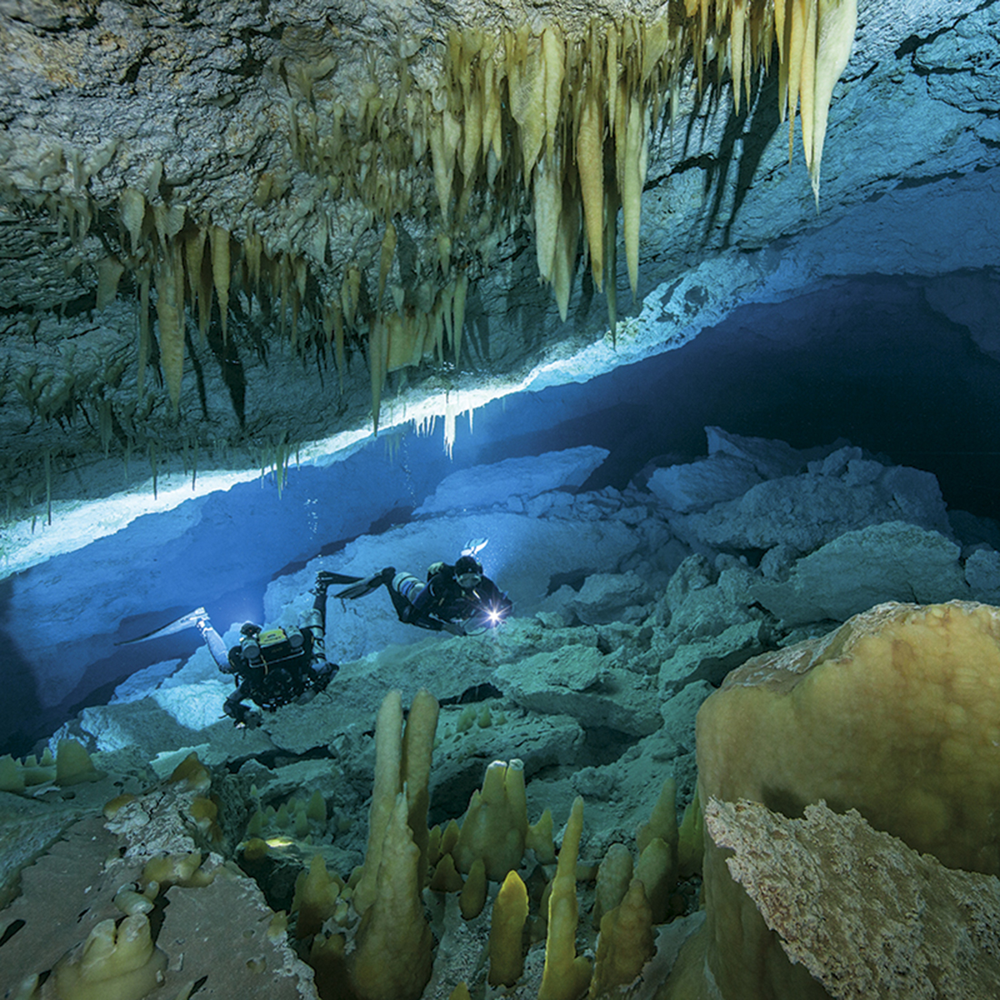
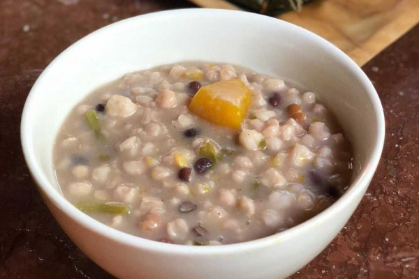

Kupang
Coral City.

Pantai Lasiana
The beauty of Kupang Island

Jagung Bose
Corn with coconut cream
Kupang, yang didirikan sekitar tahun 1653. Kota ini menjadi pusat perdagangan rempah-rempah dan kayu cendana, menarik pedagang dari berbagai wilayah, termasuk Portugal dan Belanda.ada abad ke-17, Belanda mendirikan benteng di Kupang sebagai bagian dari ekspansi kolonialnya di Nusantara, bersaing dengan Portugis dan Inggris untuk menguasai wilayah strategis di Timor.Pada masa penjajahan Belanda, Kupang berkembang sebagai pusat administrasi dan perdagangan di Pulau Timor. Kupang menjadi pintu masuk penting bagi perdagangan internasional di wilayah timur Indonesia, terutama untuk ekspor hasil bumi seperti kayu cendana.Pada Perang Dunia II, Kupang menjadi salah satu target penting bagi pasukan Jepang karena letaknya yang strategis. Setelah Jepang menduduki Kupang, kota ini menjadi pangkalan militer hingga akhir perang.Setelah Indonesia merdeka pada 1945, Kupang berintegrasi dalam wilayah Republik Indonesia. Sebagai ibu kota provinsi, Kupang terus berkembang menjadi pusat pemerintahan, pendidikan, dan ekonomi di Nusa Tenggara Timur.
wikipedia. 26 September 2024
Pahlawan Kota Kupang dikenal karena merupakan tokoh penting yang mempengaruhi pembangunan dan kesejahteraan masyarakat Kupang serta Nusa Tenggara Timur secara luas, Frans Seda. Ia adalah tokoh penting dari Nusa Tenggara Timur (NTT) yang berperan dalam politik Indonesia pada masa-masa awal kemerdekaan dan sesudahnya. Meskipun lebih dikenal dalam perannya sebagai tokoh nasional, Frans Seda berasal dari Nusa Tenggara Timur dan dianggap sebagai inspirasi oleh masyarakat Kupang dan sekitarnya. Ia pernah menjabat sebagai Menteri Perhubungan, Menteri Keuangan, dan Menteri Pertanian di Indonesia.
.sumber-wikipedia 15 April 2024
Kota Kupang terletak di bagian barat Pulau Timor, di wilayah Provinsi Nusa Tenggara Timur (NTT), Indonesia. Secara geografis, Kupang berada di pesisir barat daya pulau, menghadap ke Laut Sawu. Kota ini adalah ibu kota provinsi Nusa Tenggara Timur dan merupakan pusat administrasi, ekonomi, dan transportasi utama di kawasan timur Indonesia Kupang juga berfungsi sebagai pintu gerbang bagi berbagai wilayah di Nusa Tenggara Timur dan memiliki pelabuhan penting, yaitu Pelabuhan Tenau serta Bandara El Tari yang menghubungkan kota ini dengan berbagai wilayah di Indonesia.
.sumber-wikipedia, Sabtu 20, September 2002.